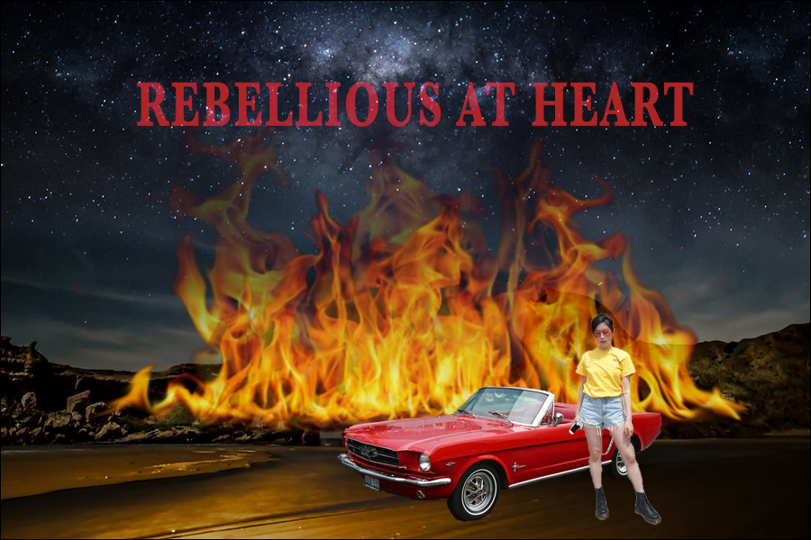

Home |
Photoshop |
Illustrator |
Animate |
InDesign |
Contact |

☆
In Photoshop, I wanted to create an image that
visualizes how I feel on the inside, which may not
necessarily be shown on the outside. I incorporated
flames to show my rebellious side; I used a convertible
against a desert and mountainous background to
portray freedom and adventure.